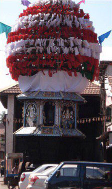
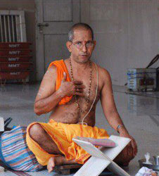
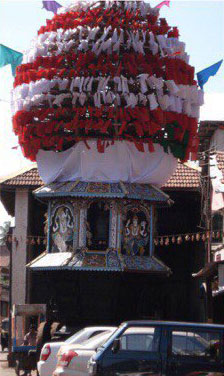
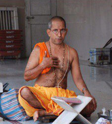
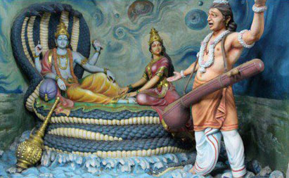
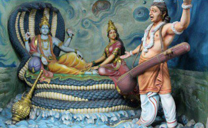

For order write in Telegram:
 @brightwiths
@brightwiths


 
 

💵 Cost of excursion: 38$ per person.
👼 Children under 5 years old - free of charge (without a seat, in the hands of parents).
⏳ From 5:30 to 17:00. Travel time - 1.5 hours.
🇺🇸 English guide.
🌟 The most popular and most “required†tour for all Goa visitors.
🚠Early in the morning you will be picked up from the hotel in a comfortable minibus with air conditioning and taken to the famous Dudhsagar Falls. The waterfall can be reached by jeep safari. Then, you will walk through the shady jungle, where you can see and feed the monkeys from your palm, and you will see a waterfall, the waters of which form a clean lake with cool water, where you can freshen up and take a water massage.
🌱 Next, you will go back to our bus in jeeps and we will go to the Spice Valley, where you will find lunch from traditional Goan dishes and local moonshine - fen.
🥘 Lunch buffet. You will be given plates of bamboo leaves, which you can fill as many as you like with dishes.
🌿 Next, we will take a tour of the valley of spices, where you will learn to distinguish between spices, and also learn how to grow, collect and process spices. The guide will tell you, show and give you the most famous spices of India and Goa. During a visit to the plantation, there is always the opportunity to purchase unique spices, oils and a variety of medicinal fees of Indian traditional medicine.
😠After, we will go to the elephant family, where (at will and for an additional fee) you can swim or ride an elephant.
🔱 Next, you will get acquainted with the traditions of Hinduism - we will visit the largest Hindu temple in Goa, dedicated to the god Ganesha.
💒 After, you will have an excursion to Old Goa - the former capital of all eastern Portuguese possessions. Old Goa is called little Lisbon, eastern Rome. UNESCO has included Old Goa in the list of World Heritage Sites. During the tour, you will visit the Cathedral of St. Catherine - the largest Christian church in Asia and the second temple - the Basilica of the Good Jesus - is known throughout the Catholic world, as here lie the relics of the "Apostle of India" - St. Francis Xavier.
📌 In the program:
✅ The largest cathedrals of Old Goa - the former capital of the Portuguese colony.
✅ Hindu Temple.
✅ Jungle Jeep Safari.
✅ Bhagavan Mahavir National Wildlife Refuge.
✅ Famous Dudhsagar Falls.
✅ Bathing in the sacred lake at the foot of the waterfall.
✅ Spice Plantation Tour.
✅ Tasty Lunch: Indian Buffet.
✅ Skating and swimming with elephants (optional for an additional fee)
📌 Price includes:
✅ Comfortable transport with air conditioning.
✅ Services of a English guide.
✅ Jeep ride to Dudhsagar Falls.
✅ Life jackets.
✅ Lunch at the Spice Valley Restaurant.
✅ All entrance fees to tourist complexes.
📌 Price does not include:
✖ Riding and swimming on an elephant (optional 700 rupees per person).
💠What to bring with you:
bathing accessories, towel, comfortable shoes. To visit temples for girls shawls or pareos, cover your shoulders and knees.
👩🧑🧑👩 Discounts for a group
👼 Children under 5 years old - free of charge (without a seat, in the hands of parents).
Accepting bitcoin:

3Kznb8Z4skuUZp6rJJTKG91UMz9jn42Yno